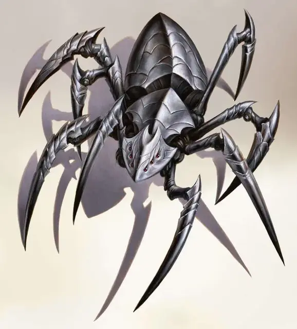

Ловчий
Retriever
Большой Конструкт, законно-злой

Класс Доспеха 19 (природный доспех)
Хиты 210 (20к10 + 100)
Скорость 40 футов, лазая 40 футов
| мод | спас | ||
|---|---|---|---|
| СИЛ | 22 | +6 | +6 |
| ЛОВ | 16 | +3 | +8 |
| ТЕЛ | 20 | +5 | +10 |
| мод | спас | ||
|---|---|---|---|
| ИНТ | 3 | −4 | −4 |
| МДР | 11 | +0 | +5 |
| ХАР | 4 | −3 | −3 |
Навыки Восприятие +5, Скрытность +8
Иммунитет к урону некротическая энергия, психическая энергия, яд; дробящий, колющий, рубящий от немагических атак, кроме нанесённых адамантиновым оружием
Иммунитет к состояниям отравление, паралич, очарование, испуг, истощение
Чувства слепое зрение 30 футов, тёмное зрение 60 футов, пассивное Восприятие 15
Языки Бездны, Подземный, Эльфийский
Опасность 14 (11500 опыта)
Бонус мастерства +5
Среда обитания Лес, Подземье, Пустыня
Особенности
Языки. Понимает Бездны, Эльфийский и Подземный, но не говорит
Безупречный следопыт. Хозяин указывает добычу ловчему. Добычей может быть конкретное существ или объект, известное хозяину лично, или это может быть разновидность существа или объекта, который хозяин видел раньше. Ловчий знает направление и расстояние до своей добычи, пока они находятся на одном плане. У ловчего может быть только одна добыча за раз. Ловчий также всегда знает местоположение своего хозяина.
Врождённое колдовство. Базовой характеристикой ловчего является Мудрость (Сл спасброска от заклинания 13). Он может накладывать следующие заклинания, не нуждаясь в материальных компонентах:
• 3/день каждое: уход в иной мир [plane shift] (только на себя и на одного из недееспособных существ, который считается согласившимся на заклинание), паутина [web]
Действия
Мультиатака. Ловчий совершает две атаки передними ножками и использует силовой или парализующий луч за раз, если это возможно.
Передняя ножка. Рукопашная атака оружием: +11 к попаданию, досягаемость 10 футов, одна цель. Попадание: 15 (2к8+6) рубящего урона.
Луч силового поля. Ловчий нацеливается на одно существо в пределах 60 футов своей видимости. Цель должна пройти спасбросок Ловкости Сл 16. При провале цель получит 27 (5к10) урона силовым полем, или половину этого урона при успехе.
Парализующий луч (перезарядка 5-6). Ловчий нацеливается на одно существо в пределах 60 футов своей видимости. Цель должна пройти спасбросок Телосложения Сл 18, иначе станет парализованным на 1 минуту. Цель может повторять этот спасбросок в конце каждого своего хода, оканчивая эффект на себе при успехе.
Если парализованное существо является средним или маленьким, ловчий может подобрать его частью действия и передвигаться или карабкаться с ним на полной скорости.
Описание
Ловчий – мощный, паукоподобный конструкт, задуманный и построенный дроу для проникновения в Бездну и захвата демонов, чтобы поработить их или использовать в своих ритуалах. Механизмы оказались настолько эффективными и страшными, что теперь они выполняют множество различных заданий.
Заключённый демон. Хотя каждый ловчий является конструктом из металла и магии, в нём находится заключённый в тюрьму дух бебилита [bebilith]. Большая часть разума демона очищена, оставив в нём только жестокость и коварство.
Смертельные собиратели. Хоть они и были созданы для работы только в Бездне, ловчие иногда выполняют миссии могущественных дроу по поимке живьём и без повреждений, нужных этим дроу, некоторых существ или объектов. Только в очень редких случаях ловчий передаётся или продаётся существам, не являющимися дроу, поскольку дроу не желают рисковать тем, что конструкт может быть задействован против них самих.